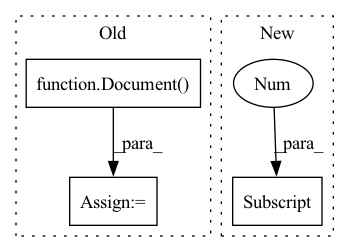

Pattern ID :31813
Before Change
time.sleep(20)
logger.info("rolling update done in process")
// add query testing
query_doc = Document()
query_doc.text = "hello world"
response = _query_docs([query_doc.dict()])
matches = response["search"]["docs"][0].get("matches")
logger.info(f"got {len(matches)} matches")After Change
time.sleep(30)
query_doc = Document(text="hello world")
response = query_docs(query_doc)
matches = response[0] .data.docs[0].matches
logger.info(f"got {len(matches)} matches")
assert matches
In pattern: SUPERPATTERN
Frequency: 4
Non-data size: 3
Instances Fragment ID: 92879385
Project Name: jina-ai/examples
Commit Name: c3ea2eddcc58117b3f28c34ca861e6fd2a341efb
Time: 2021-09-02
Author: deepankar.mahapatro@jina.ai
File Name: wikipedia-sentences-query-while-indexing/tests/test_query_while_indexing.py
M Class Name: AnonimousClass
N Class Name: AnonimousClass
M Method Name: test_query_while_indexing(0)
N Method Name: test_query_while_indexing(0)
M Parent Class:
N Parent Class:
M File Name: wikipedia-sentences-query-while-indexing/tests/test_query_while_indexing.py
N File Name: wikipedia-sentences-query-while-indexing/tests/test_query_while_indexing.py
M Start Line: 30
M End Line: 52
N Start Line: 42
N End Line: 68
Before Change
def run_test(flow, endpoint, port_expose):
with flow:
resp = flow.post(
endpoint,
[Document() for _ in range(10)],
return_results=True,
port_expose=port_expose,
)After Change
from jina.clients import Client
gateway_pod_name = (
core_client.list_namespaced_pod(
namespace=namespace, label_selector="app=gateway"
)
.items[0]
.metadata.name
)
config_path = os.environ["KUBECONFIG"]
import portforward Fragment ID: 92879384
Project Name: jina-ai/jina
Commit Name: 6e9e7ef32f61cab04c6efc7a9f21659d26b50fdb
Time: 2022-01-10
Author: joan.martinez@jina.ai
File Name: tests/k8s/test_k8s.py
M Class Name: AnonimousClass
N Class Name: AnonimousClass
M Method Name: run_test(4)
N Method Name: run_test(3)
M Parent Class:
N Parent Class:
M File Name: tests/k8s/test_k8s.py
N File Name: tests/k8s/test_k8s.py
M Start Line: 10
M End Line: 18
N Start Line: 78
N End Line: 110
Before Change
if copy:
from ..document import Document
chunk = Document( document, copy=True)
else:
// note: this is faster than Document(document, copy=False)
chunk = document
After Change
make sure the added chunk is legit.
super().append(document)
chunk = self[-1]
if not chunk.mime_type:
chunk.mime_type = self._ref_doc.mime_type
chunk.set_attributes(
parent_id=self._ref_doc.id, granularity=self.granularity, **kwargs Fragment ID: 92879387
Project Name: jina-ai/jina
Commit Name: ab16cee09446f426fd847d6ff09c4fd117805093
Time: 2021-08-11
Author: joan.martinez@jina.ai
File Name: jina/types/arrays/chunk.py
M Class Name: ChunkArray
N Class Name: ChunkArray
M Method Name: append(2)
N Method Name: append(3)
M Parent Class: DocumentArray
N Parent Class: DocumentArray
M File Name: jina/types/arrays/chunk.py
N File Name: jina/types/arrays/chunk.py
M Start Line: 28
M End Line: 56
N Start Line: 40
N End Line: 44
Before Change
if copy:
from ..document import Document
match = Document( document, copy=True)
else:
// note: this is faster than Document(document, copy=False)
match = document
After Change
:rtype: :class:`Document` view
super().append(document)
match = self[-1]
match.set_attributes(
granularity=self.granularity, adjacency=self.adjacency, **kwargs
)
Fragment ID: 92879386
Project Name: jina-ai/jina
Commit Name: ab16cee09446f426fd847d6ff09c4fd117805093
Time: 2021-08-11
Author: joan.martinez@jina.ai
File Name: jina/types/arrays/match.py
M Class Name: MatchArray
N Class Name: MatchArray
M Method Name: append(2)
N Method Name: append(3)
M Parent Class: DocumentArray
N Parent Class: DocumentArray
M File Name: jina/types/arrays/match.py
N File Name: jina/types/arrays/match.py
M Start Line: 20
M End Line: 41
N Start Line: 28
N End Line: 29